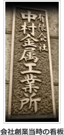

TOP MESSAGE
昨日までの自分を、超えていく。
※元サイトのご挨拶をもとにした案文です。正式な文面はお客様にご確認ください

昭和42年、東京・葛飾の下町の小さな工場から、当社は出発しました。以来約60年、精密金属部品ひと筋に歩み、合言葉である「お客様クレームゼロ」を胸に、品質と納期への誠実さでお客様の信頼に応えてきました。
技術の仕事は、失敗の連続です。新しいことをやれば、必ずしくじる。それでも「負けるもんか」と何度でも挑み、昨日までの自分を超えていく。私たちが大切にしてきたのは、そんな負けん気とチャレンジ精神です。
経験の有無は問いません。次の時代の中村金属工業を、一緒につくってくれる方をお待ちしています。
株式会社中村金属工業 代表取締役 中村 幸一
